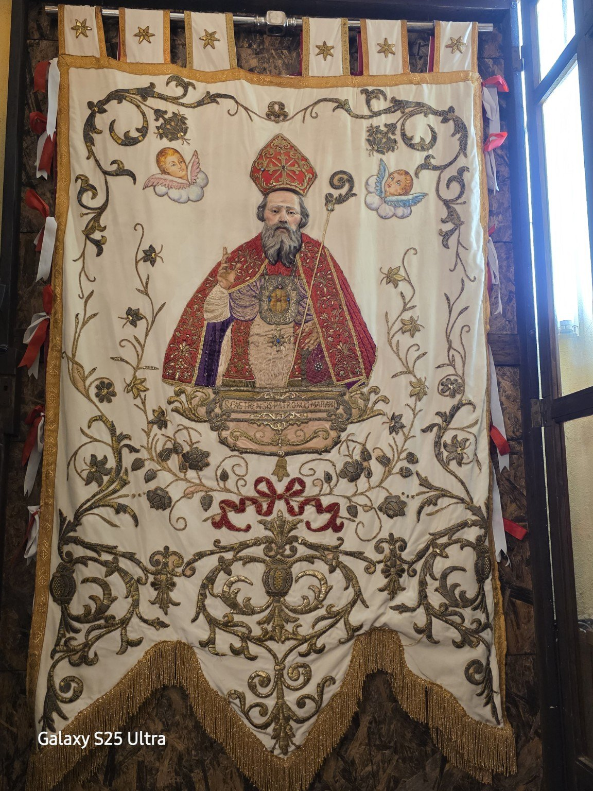
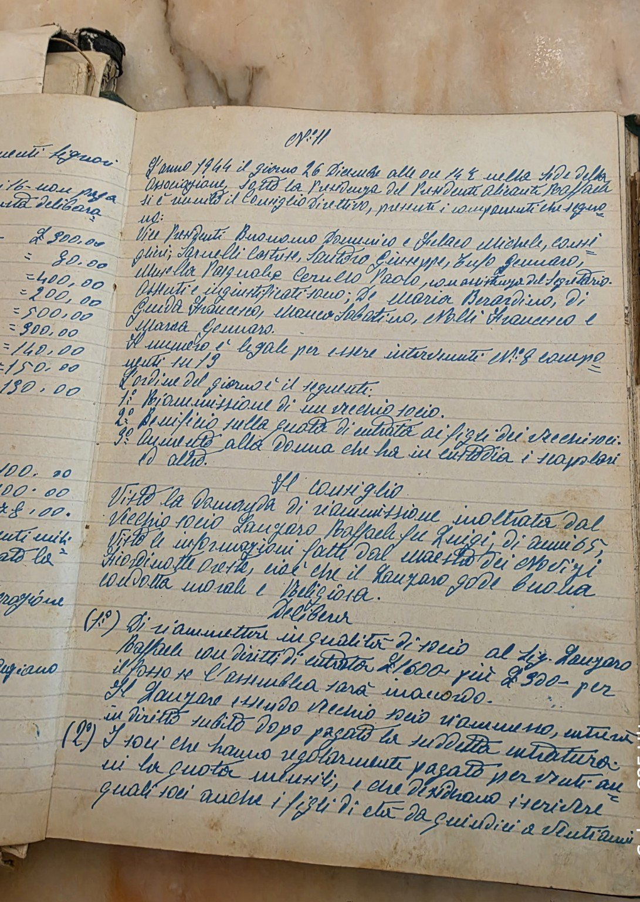
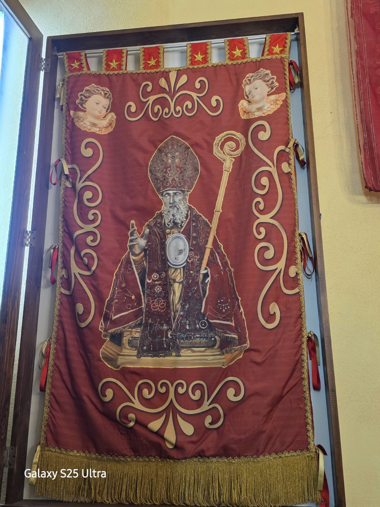

Associazione San Castrese.
Memoria, culto e tradizione a Marano.
Dal 1909 l'Associazione custodisce e tramanda il legame tra Marano di Napoli e il suo Santo Patrono. Bandiere, registri, insegne e memorie conservate nella sede raccontano oltre un secolo di vita associativa.
La storia non è soltanto raccontata.
È ancora qui, custodita.
Tra gli ambienti di Via Casalanno 1 sono conservate testimonianze autentiche della vita associativa: dalla bandiera del 1909 ai registri manoscritti, fino alle insegne della storia contemporanea.

Una delle testimonianze più antiche dell'identità associativa.
Scopri il patrimonio →
Una pagina manoscritta documenta la riunione del Consiglio Direttivo del 26 dicembre 1944.
Entra nell'archivio →
Benedetta da Papa Francesco in Piazza del Plebiscito il 21 marzo 2015.
Leggi la storia →Un patrimonio da conoscere.
Una storia da custodire.
Scopri la sede di Via Casalanno 1, il patrimonio storico e devozionale, le attività associative e l'archivio della memoria.
Conosci gli spazi dell'Associazione e il ruolo della sede nella vita associativa.
Reliquie, insegne, documenti e testimonianze custodite e valorizzate dall'Associazione.
Iniziative culturali, ricorrenze, pellegrinaggi e momenti di partecipazione.
Dalle origini del sodalizio del 1909 alla storia contemporanea dell'Associazione San Castrese.
Fotografie, documenti e memorie che raccontano la storia dell'Associazione e del culto di San Castrese.
Unisciti all'Associazione e contribuisci alla tutela e alla trasmissione di questa tradizione.